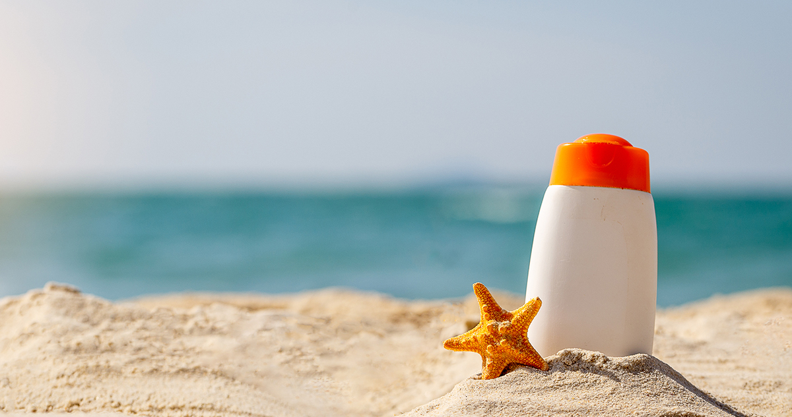

Mivel túráink közben elkerülhetetlen, hogy ki és beszállás esetén
vízbe lépj, tavasszal, ősszel, amikor hideg a víz és a levegő, és nem
lenne kellemes vizes lábbal túrázni, (valamint apadó vízben biztosan
lesz iszapos terep) hasznos lehet a gumicsizma. Egyébként sokféle
lábbeli alkalmas, ami nem csúszkál a lábadon és nem sajnálod
esetlegesen iszapos terepen használni.
A felszerelés következő fontos eleme a napsugárzás elleni
védekezés: napszemüveg, naptej, fejfedő, érzékeny bőrűeknek
védőruha. Olyan fejfedőt hozz, amit az enyhe szellő nem visz le a
fejedről, kalapoknál az áll alatti rögzítés a szerencsés.

Szúnyog és kullancsriasztó.
Megfelelő mennyiségű(legalább fejenként 1,5-2l) alkohol mentes
folyadék,(a start és célhelyen nem ívóvíz folyik a csapból) saját
igénynek megfelelő mennyiségű szendvics, illetve nasi.
Törölköző, fürdőruha, váltóruha, esőköpeny. A ruháidat jó, ha erős
kukászsákba csomagolod és bekötöd, így vízmentes lesz. WC papír,
zsebkendő, egyéb eü. felszerelés, ezeket is zárható műanyag
tasakba érdemes tenni. Telefonoknak vízmentes tasak, esetleg jól
zárdő ételes doboz. A dohányzóknak valamilyen csikktartó edény.
Érdemes párnát, vagy kényelmes üléstakarót hozni.
Magas UV sugárzásban hasznos lehet a hosszú ujjú póló, illetve
olyan hosszabb nadrág, ami takarja ülő helyzetben a combot
Ha érzékeny a kezed kesztyű is jól jöhet.
A túrák díja 11000 Ft/fő/nap A díj tartalmazza a kenuk és felszerelésük biztosítását, valamint a túraszervezés és a túravezetés díját. A további felmerülő költségek(utazási- , szállás-, étkezési-költségek) a résztvevőket terhelik. 10% kedvezményt tudunk adni, ha egy csapat legalább 10 fővel jelentkezik.